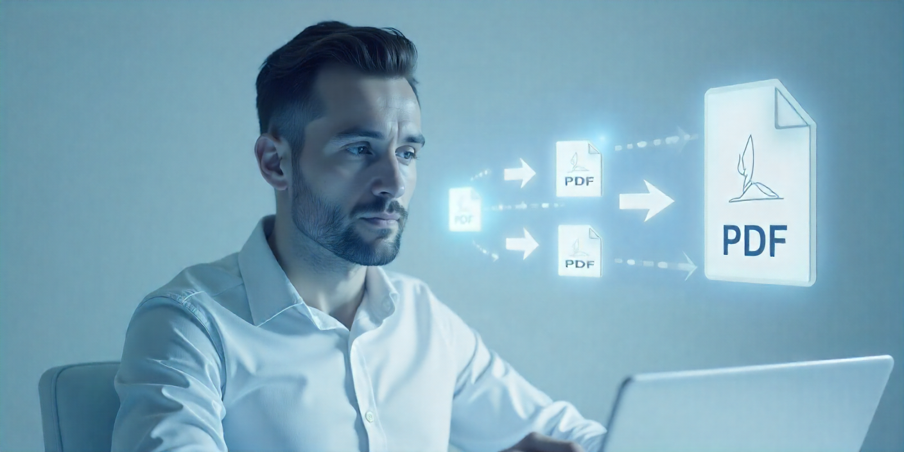

Converting PDF files into high-quality JPG images doesn’t have to be complicated. In this guide, you’ll learn how to use our free PDF to JPG online tool to make the process fast, simple, and lossless.
Portable Document Format (PDF) is one of the most widely used file types for documents, reports, and presentations. However, there are times when you may need to convert a PDF into an image format such as JPG. For example, students may need an image version of lecture notes for easy sharing, professionals may want to insert a PDF page into a presentation, or designers may need a high-resolution image for editing.
While many converters exist, not all maintain the original quality of your PDF. Some reduce resolution, distort text, or create oversized files. That’s why our PDF to JPG online tool is designed to provide sharp, clear results with minimal effort. Best of all, it’s completely free and doesn’t require software installation.
Why Use an Online PDF to JPG Converter?
Using an online tool offers speed and convenience. Unlike desktop software that requires installation and updates, an online free PDF converter lets you upload your document and download the converted image instantly. Plus, our tool works on all devices—laptops, tablets, or smartphones—so you can convert files anywhere, anytime.
Step-by-Step Guide to Convert PDF to JPG Online
Here’s how to use our tool to convert PDF files into JPG images without losing quality:
- Upload Your File: Go to our PDF to JPG tool and click the “Upload” button. Select the PDF file you want to convert. Drag-and-drop is also supported for quick access.
- Adjust Settings (Optional): Choose whether you want to convert the entire PDF into separate JPG images or extract specific pages. The tool ensures each image is optimized for clarity.
- Start Conversion: Click “Convert.” Within seconds, your PDF pages will be processed and converted into high-resolution JPG images.
- Download the Results: Once the process is complete, download your JPG files. You can either save them individually or as a compressed ZIP folder for convenience.
Benefits of Our PDF to JPG Tool
- 100% Free to Use – no hidden charges or premium restrictions.
- Maintains Original Quality – text and images remain sharp.
- Fast Processing – converts in just a few seconds.
- Cross-Device Compatible – works on Windows, Mac, Android, and iOS.
- No Installation Required – everything runs directly in your browser.
Final Thoughts
Converting PDFs into JPG images doesn’t have to be stressful or time-consuming. With our PDF to JPG online tool, you get a smooth, fast, and high-quality free PDF converter that works anywhere. Whether you need to convert PDF images for school, work, or creative projects, this tool has you covered.
Try it today and experience hassle-free conversion in just a few clicks!